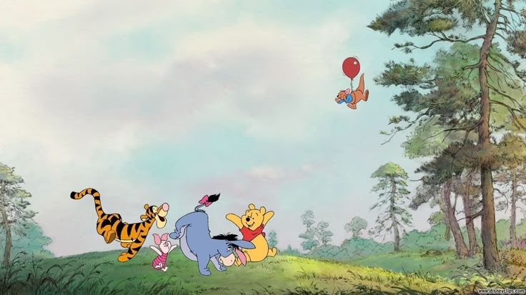

your bg music^^

One of my biggest interest...SOFTBALL!
A teaching video:
PIANO!I'm at grade 5 now~
Example: Canon in D
He has a strong mantility and I like his mindset.
A competition video of Ka Long
He is one of my favourite singer.
He is a great voices and he is very talented.
They make me happy and saved me when I am down.
A music video of them: